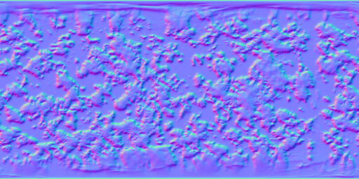
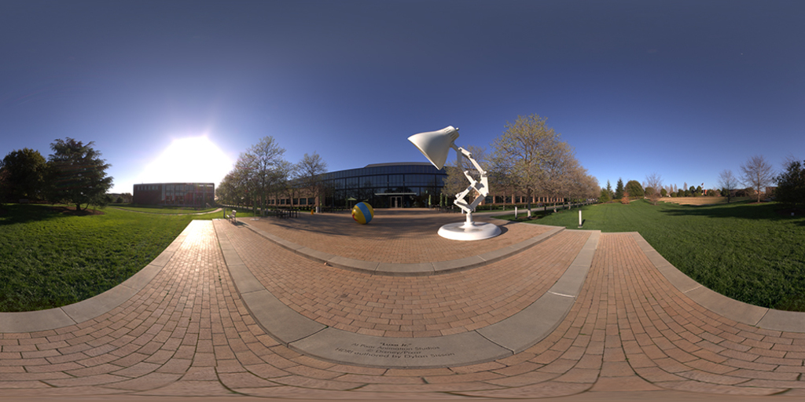
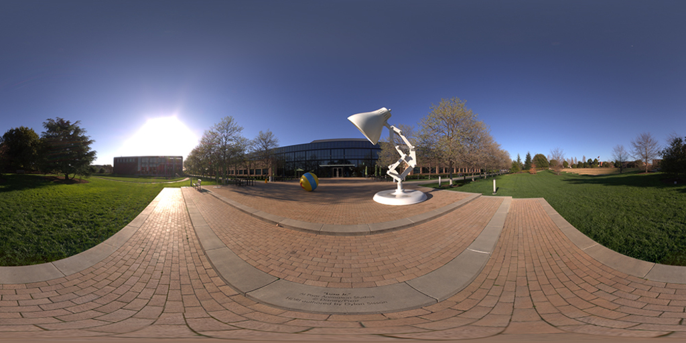
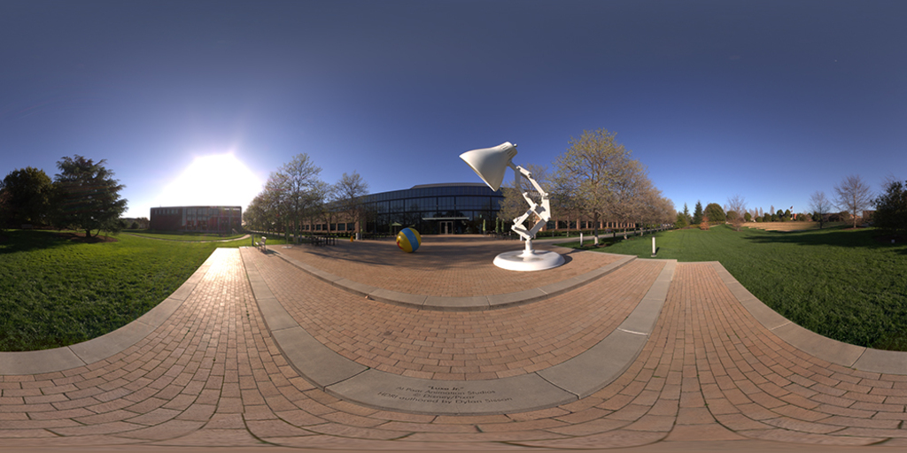

KAMERA
Radius:
1.0
Height:
0.0
Rotation:
0
JENIS BENTUK
Kubus
Piramida
Dodecahedron
Model 4
Model Kustom
JENIS PROYEKSI
Orthographic
Oblique
116.565
63.435
Perspective
120
SHADING & ANIMASI
Shading
Animation
ROTASI
X:
0
Y:
0
Z:
0
Z Cube:
0
TRANSLASI
X:
0
Y:
0
Y Cube:
0
Z:
0
SCALING
X:
1
X Cube:
1
Y:
1
Z:
1
LOAD & SAVE
Save
Help / Cara Menggunakan
Lakukan pengaturan
radius
,
height
, dan
rotation
untuk mengatur setelan kamerapada bagian
KAMERA
Terdapat 3 model bawaan yang dapat dipilih, yaitu Kubus, Piramid, dan Dodecahedron pada bagian
JENIS BENTUK
Anda dapat menggunakan model kustom / hasil penyimpanan dengan memilih file pada bagian
LOAD & SAVE
Simpan model hasil transformasi dengan klik tombol
save
Terdapat 3 tipe proyeksi yang dapat dipilih, yaitu
orthographic
,
oblique
, dan
perspective
pada bagian
JENIS PROYEKSI
Lakukan tranformasi (translasi, rotasi, skala/scale) pada model dengan mengatur nilai X, Y, dan Z menggunakan slider
Anda dapat menerapkan
shading
dan
animation
dengan mencentang
checkbox
pada bagian
SHADING & ANIMATION
Gunakan tombol
reset
untuk mengulang kondisi model menjadi keadaan semula



 
